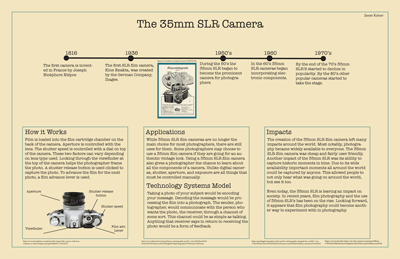

Jason Keiser's Infographic Project 📰 |
||
| Home Photo Project Video project Infographic Project Print Project | ||
|
For the infographic project we had to do research on a type of communication system. I decided to do research on 35mm SLR cameras because of my interest in film photography. I learned a lot about the 35mm camera while doing this project that I found interesting. In the infographic I included information such as how the camera works, the history of the camera, its applications and impacts, and how the 35mm camera follows the Technology Systems Model. |

Link to my Infographic |
|
| Home Photo Project Video project Infographic Project Print Project | ||
|
©2024 Jason Keiser | ||